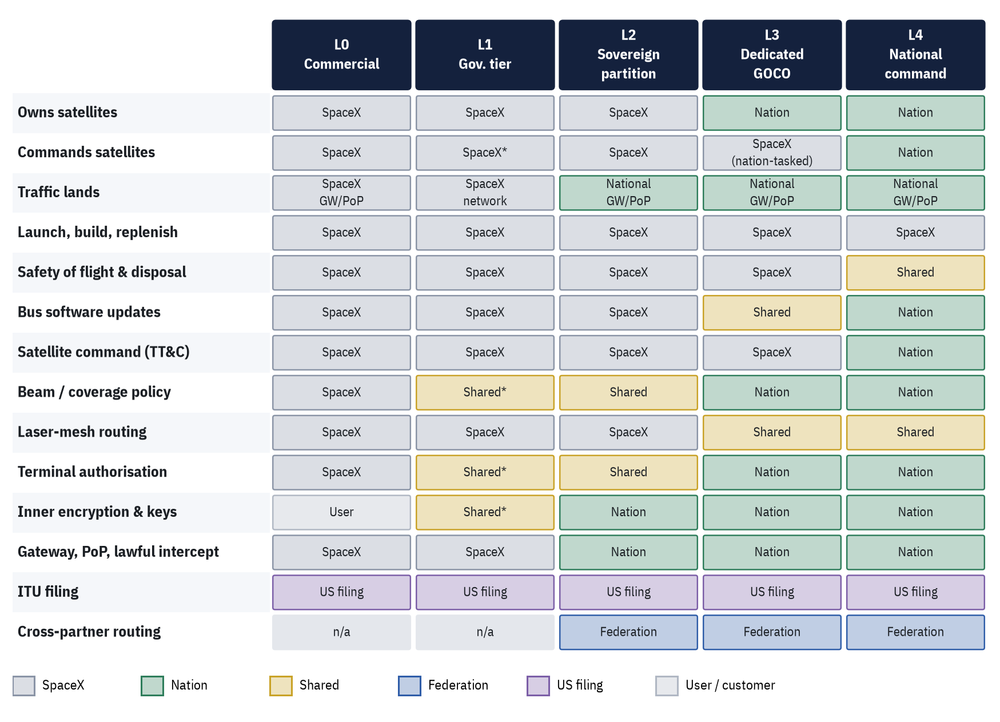
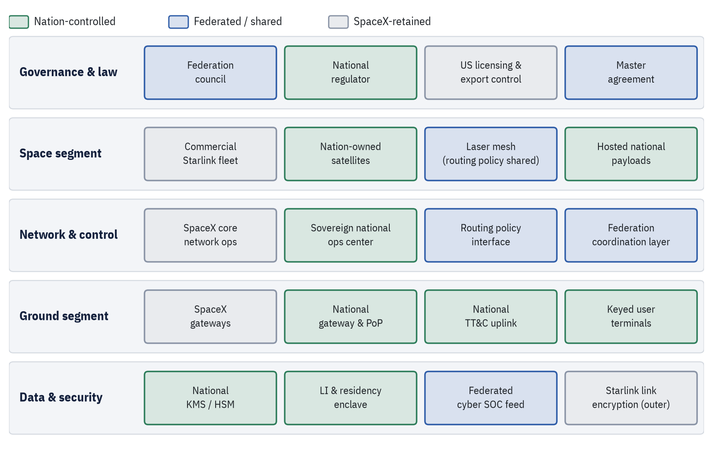
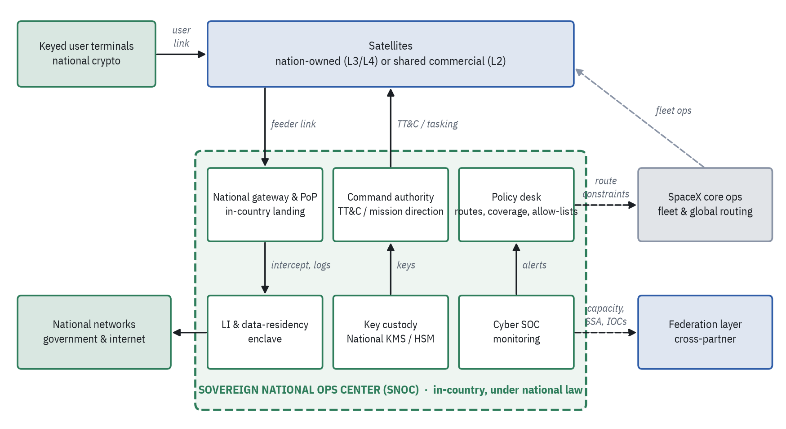
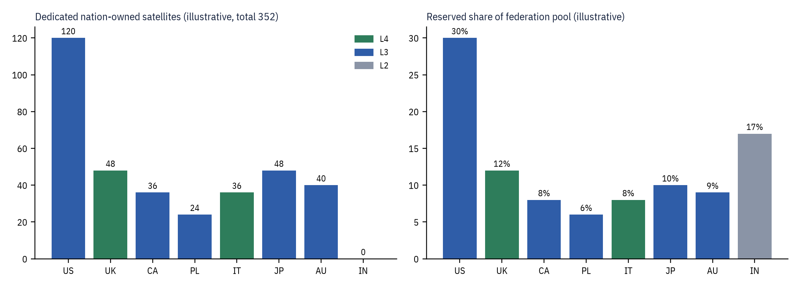
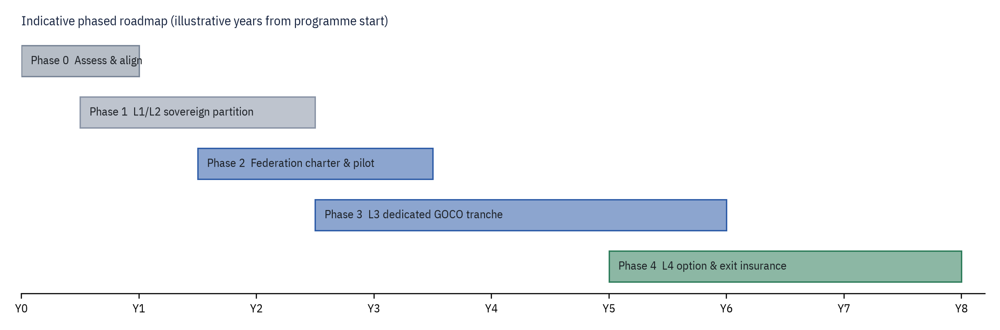

TECHNICAL WHITE PAPER · GOVERNMENT / DEFENCE BRIEFING
Federated Sovereign Starlink Model
A reference concept for partner-nation sovereignty over a Starlink-class LEO network: a five-level nationalization spectrum, a sovereign national ops center, and a federation layer
Document type | Concept paper / technical briefing (non-official) |
Status | Draft for discussion |
Date | 29 October 2026 |
Source | Converted from the Page “Federated Sovereign Starlink Model” (canvas 2983ea20); facts re-checked against public sources, 29 Oct 2026 |
Distribution | Unlimited; contains only publicly available information |
CONCEPT, NOT AN OFFERING. This paper describes a hypothetical model. No public source shows SpaceX offering nationalized Starlink satellites, or transferring satellite command authority, to any foreign government. The closest public precedents are US-only: the government-owned MILNET / Space Data Network (SDN) Backbone and the NRO’s proliferated constellation. All partner nations, satellite counts, levels, sites, capacity shares, routing results and timelines in this paper are illustrative. No government, agency or company has endorsed or reviewed it. |
Contents
1. Executive Summary 3
2. Background and Problem Statement: The Sovereignty Gap 3
3. Current Landscape 4
4. The Nationalization Spectrum (L0–L4) 5
5. Reference Architecture 7
6. The Federation Model and Illustrative Partners 11
7. Sovereignty Controls 12
8. Routing and Coverage Trade-offs 13
9. Risks, Feasibility and Policy Considerations 14
10. Recommendations and Phased Roadmap 15
Annex A. Assumptions and Illustrative Data 16
Annex B. Fact Status: Real versus Illustrative 17
References 18
Figures
Figure 1. L0–L4 control matrix 7
Figure 2. Five-layer reference architecture 8
Figure 3. SNOC block diagram 10
Figure 4. Illustrative dedicated satellites and reserved capacity share by partner (model figures, not real programmes). 12
Figure 5. Indicative phased roadmap 16
How to read this paper
Sourced facts carry bracketed reference numbers, e.g. [5], that resolve to the References list. Figures and statements marked (illustrative) are model assumptions and are not claims about any real programme, government or contract. Annex B lists every substantive claim with its status. Times and dates are as reported by the cited source.
1. Executive Summary
Governments increasingly depend on commercial low-Earth-orbit (LEO) broadband for defence, diplomatic and crisis communications, but they do not control the networks they depend on. Public episodes in Ukraine in 2022 and October 2026 [15][16] showed that the terms, coverage and performance of service delivered over Starlink can be decided outside the user government. This paper sets out a Federated Sovereign Starlink Model: a reference concept in which partner nations take progressively more control of a slice of a Starlink-class network, up to nation-owned satellites under national command, each operated from a sovereign national ops center (SNOC) that interfaces with SpaceX core operations and a multinational federation layer.
1.1 Key findings
- Nationalization is a ladder, not a switch. Five levels (L0–L4) move one control at a time from the operator to the nation: first where traffic lands, then who owns the satellites, finally who holds the command keys.
- L0–L1 exist today; L2 is partly required by regulators; L3 has a US-only precedent; L4 has no public precedent. India’s 2025 licence conditions already mandate in-country gateways and local lawful intercept [18][19]; the US MILNET / SDN Backbone was reported as government-owned and contractor-operated with 480-plus Starshield satellites [4][26]; no public source shows SpaceX offering L4 to anyone.
- A higher service tier does not buy sovereignty. Musk has said limits on Starshield speed and usage “are decided by the US military and ultimately POTUS” [16]. Partners that need assured access need contractual no-cutoff terms, national command keys (L4), or both.
- Small sovereign fleets cannot close routes alone. In the model’s illustrative routing, a 24-satellite national fleet often has no end-to-end laser path under sovereign-only routing; federated transit across partners closes many of these gaps. This is the central sovereignty-versus-coverage trade-off.
- SpaceX retains launch, manufacturing, the software supply chain and global route computation at every level. Dependence is reduced and made contractual, not removed. A non-SpaceX fallback bearer such as IRIS² (348 satellites, first launches planned for 2029 [21][22]) is part of any credible exit strategy.
1.2 Recommendations
- Start at L2. Stand up national gateways, PoPs, lawful-intercept enclaves and national inner encryption now; this is achievable within existing commercial and regulatory practice.
- Negotiate a master agreement before buying satellites. Assured access, no unilateral cutoff of national assets, escrowed ground software, step-in and buy-out rights should precede any L3 commitment.
- Form the federation early. A small partner charter for reciprocal transit, capacity accounting, shared space situational awareness (SSA) and cyber indicators is what makes small national fleets useful.
- Treat L3 as the realistic ceiling for the next five years and L4 as an option. L3 requires US government approval for a foreign customer and export-control clearance; L4 also needs SpaceX willingness, TT&C and crypto integration and an ITU filing strategy.
- Fund a second bearer. Pair any Starlink-based sovereignty arrangement with IRIS², GEO milsatcom or another non-SpaceX path, so that exit is credible.
2. Background and Problem Statement: The Sovereignty Gap
LEO mega-constellations deliver global, low-latency broadband at a scale national programmes cannot quickly match. SpaceX’s Starlink is the largest: third-party trackers count roughly 11,000 Starlink satellites in orbit as of late October 2026 (an estimate, not an official figure), and on 9 January 2026 the FCC authorised a second 7,500-satellite tranche, bringing the authorised Gen2 constellation to 15,000 satellites [11][12]. The network’s satellites are linked by optical inter-satellite lasers, three per satellite at up to 200 Gbps [8], and it lands traffic through a large gateway network, with more than 100 US gateway sites and over 1,500 antennas [10].
For a government user, the difficulty is not capability but control. In the commercial and government tiers, the operator owns and commands the satellites, computes routes, decides where terminals work and is subject to US law and policy. The sovereignty gap is the distance between the operational dependence a government accepts and the control it actually holds. It has four parts:
- Access: whether service can be restricted, geofenced or degraded by a third party, or for reasons the user cannot see.
- Data: where traffic lands, where it is decrypted, and whose law governs intercept, metadata and logs.
- Command: who can command the satellites carrying national traffic and who holds the keys.
- Continuity: whether the nation can keep operating, or exit, if the commercial relationship or US policy changes.
Public episodes illustrate each part. In September 2022, Starlink coverage near Crimea was not enabled for a Ukrainian operation; Musk said he refused a Kyiv request, and accounts differ on whether service was cut or never enabled [15]. In October 2026, Ukraine reported that military drones lost satellite connectivity above about 160 km/h (100 mph) for around ten days; the cause and responsibility are disputed, and the Pentagon Inspector General declined a bipartisan Senate request to investigate [16]. Separately, Italy’s reported talks on a Starlink government contract stalled in 2025 amid dependence concerns [20][27].
2.1 Problem statement
How can a partner nation obtain assured access, data sovereignty, and (where needed) command authority over the part of a Starlink-class network that carries its national traffic, without building a national constellation from scratch, and while keeping the coverage benefits of a shared global mesh?
2.2 Scope and method
This paper is a design concept. It uses public facts about Starlink, Starshield and related programmes, all cited, and an illustrative eight-nation federation to test the design. It does not describe any SpaceX product, offer or negotiation, and it does not assess classified capabilities.
3. Current Landscape
The following programmes and rules are the factual basis for the model. Each is drawn from public reporting or official sources.
Table 1. Public landscape: programmes, contracts and rules relevant to sovereign LEO service
Item | What is publicly known | Relevance to the model | Ref. |
|---|---|---|---|
Starshield | SpaceX’s government line: Earth observation, communications and hosted payloads; adds high-assurance cryptographic capability for classified payloads; laser terminals can be integrated on partner satellites. | Basis for L1 (government tier) and the satellite bus for L3/L4. | [1] |
NRO proliferated architecture | Launches since May 2024; NROL-105 on 16 Jan 2026 was the 12th; hundreds of satellites planned, launches through 2029. Reported as Starshield-based; not officially confirmed. | Precedent for a government-owned constellation built on a commercial-derived bus. | [2][3] |
MILNET / SDN Backbone | Reported in 2025 as a government-owned, contractor-operated (GOCO) constellation of 480-plus Starshield satellites with a Space Force (Delta 8) mission director. Renamed SDN Backbone; SpaceX won a $2.29B firm-fixed-price OTA in May 2026, with a fully operational prototype due by end-2027. Space Systems Command described it as government owned and operated. | Closest precedent for L3. US only. | [4][5][6][26] |
Starlink laser mesh | Three lasers per satellite at up to 200 Gbps; about 9,000 lasers carrying over 42 PB/day (early 2024). | Enables policy-tagged routing and federated transit. | [8][9] |
Gateways | More than 100 US gateway sites and over 1,500 antennas. | National gateways and PoPs are the L2 landing point. | [10] |
FCC Gen2 grant (DA 26-36) | 9 Jan 2026: second 7,500-satellite tranche, 15,000 Gen2 satellites authorised; US is the notifying administration. | Satellites in this model fly in licensed shells under US filings. | [11][12] |
Starlink V3 / Starship | 28 Sep 2026: Starship Flight 14 reached orbit for the first time and deployed 26 Starlink V3 satellites. | Larger, higher-capacity satellites change the economics of dedicated fleets. | [13][14] |
Ukraine 2022 / 2023 / 2026 | 2022 Crimea episode; June 2023 Pentagon contract for Starlink in Ukraine, reported to give DoD control of signal settings; Oct 2026 drone-speed restriction episode. | Motivates no-cutoff terms and national command. | [15][16][17] |
India licence (2025) | Indian gateways only; no copying or decryption of Indian data abroad; local lawful intercept. | Regulatory precedent for L2 (regulation, not ownership). | [18][19] |
Italy | Reported ~€1.5B, five-year government Starlink deal stalled in March 2025 over political and dependence concerns. | Demand exists; dependence is the obstacle. | [20][27] |
IRIS² | EU secure connectivity constellation: 348 satellites (330 LEO, 18 MEO) after the Aug 2026 implementation agreement; first launches 2029, services from 2030. | Non-SpaceX fallback bearer and exit path. | [21][22] |
South Africa | Licensees must be 30% owned by historically disadvantaged groups; SpaceX called this a significant barrier. A Dec 2025 policy direction allows equity-equivalent programmes, but as of Oct 2026 Starlink still lacked market access. | Landing rights are national and can block entry entirely. | [23][24] |
Export control | Military spacecraft and related data are generally ITAR (USML Cat. XV); most commercial comsats moved to EAR 9x515 in 2014. | Shapes what a foreign nation can receive at L3/L4. | [25] |
Gap in the record. Every public example of a government owning or directing Starshield-class satellites is a US government programme. No public source shows a foreign government owning Starlink or Starshield satellites, or holding their command keys. |
4. The Nationalization Spectrum (L0–L4)
The model defines five levels. Each moves one more control from SpaceX to the nation. The levels are cumulative: L3 includes the L2 sovereign partition, and L4 includes L3’s dedicated satellites.
Table 2. The five levels of nationalization
Level | What it means | Owns sats | Commands | Traffic lands | Public status | Precedent |
|---|---|---|---|---|---|---|
L0 Commercial service | Subscription on the shared Starlink network | SpaceX | SpaceX | SpaceX gateways and PoPs | Exists publicly | Starlink consumer, business and government plans |
L1 Government service tier | Starshield terminals and contracted service terms | SpaceX | SpaceX, with contract terms | SpaceX network, extra encryption | Exists publicly | Starshield comms [1]; 2023 Pentagon deal for Ukraine reportedly gave DoD control of signal settings [17] |
L2 Sovereign partition | National gateway, PoP, lawful intercept and data residency on shared satellites | SpaceX | SpaceX; nation sets slice policy | In-country gateway and PoP only | Partial precedent | India’s 2025 licence conditions (regulation, not ownership) [18][19] |
L3 Dedicated satellites, GOCO | Nation-funded Starshield-class satellites operated by SpaceX crews under a national mission director | Nation | SpaceX crews, tasked by nation | National gateway; mesh by policy | Partial precedent | US MILNET / SDN Backbone; NRO proliferated constellation [2][4][5]. No public foreign equivalent |
L4 Full national ownership and command | Nation owns satellites, runs TT&C and holds command keys; SpaceX supplies bus, launch and mesh access | Nation | Nation | National gateway; sovereign mesh island possible | Proposed concept | No public source shows SpaceX offering this to any government |
4.1 What changes at each step
- L0 → L1: contractual terms and higher-assurance terminals and crypto; the operator still decides coverage and policy.
- L1 → L2: data sovereignty. All national traffic lands, exits and is intercepted in-country; the nation sets slice policy, while the satellites remain shared.
- L2 → L3: asset ownership. The nation funds and owns dedicated satellites; SpaceX crews fly them at the tempo set by a national mission director, mirroring the GOCO pattern reported for MILNET [4].
- L3 → L4: command authority. The nation uplinks from its own TT&C station with its own keys and can isolate its satellites into a sovereign routing island.
4.2 Control matrix
Figure 1 consolidates who holds each function at every level. Rows for L2–L4 follow the source model’s split-of-control design; L0–L1 cells are inferred from the level definitions and are marked with an asterisk where a contract or Starshield feature shares control.

Figure 1. L0–L4 control matrix. L2–L4 per the model’s split of control (Section 5.3); L0–L1 inferred from level definitions. * = shared via contract terms or Starshield features. Design assumptions, not a description of any existing contract.
5. Reference Architecture
5.1 Five-layer architecture
The architecture has five layers, each with components that are nation-controlled, federated (shared) or SpaceX-retained. The colour coding in Figure 2 is the core of the design: sovereignty is achieved by moving specific components, not by moving the whole system.

Figure 2. Five-layer reference architecture. Green: nation-controlled. Blue: federated / shared. Grey: SpaceX-retained.
Table 3. Architecture components by layer and control
Layer | Component | Control | Role |
|---|---|---|---|
Governance & law | Federation council | Federated | Partners set cross-routing, capacity-sharing and crisis rules; each nation keeps a veto over its own assets |
National regulator | Nation | Landing rights, gateway and terminal licences, lawful-intercept and localisation conditions | |
US licensing & export control | SpaceX / US | FCC licence and ITU filings under the US administration; ITAR/EAR govern transfers | |
Master agreement | Federated | Assured access, no unilateral cutoff of national assets, escrow and step-in rights | |
Space segment | Commercial Starlink fleet | SpaceX | Shared satellites in licensed shells; carry partitioned national traffic as ciphertext |
Nation-owned satellites | Nation | Starshield-class buses funded and owned by a nation (L3/L4), flown in licensed shells | |
Laser mesh | Federated | Optical inter-satellite links; routing policy is shared | |
Hosted national payloads | Nation | Crypto, sensing or relay payloads under exclusive national control | |
Network & control | SpaceX core network ops | SpaceX | Fleet health, safety of flight, global route computation, software supply chain |
Sovereign national ops center | Nation | National mission direction or TT&C, key custody, slice policy, cyber SOC | |
Routing policy interface | Federated | Nations publish route constraints that SpaceX’s router must honour | |
Federation coordination layer | Federated | Brokers cross-partner capacity and routing; shares SSA and cyber indicators | |
Ground segment | SpaceX gateways | SpaceX | Global gateway network for non-sovereign traffic |
National gateway & PoP | Nation | In-country landing point and internet exit for all national traffic | |
National TT&C uplink | Nation | Command uplink (L4) or mission-director link (L3) | |
Keyed user terminals | Nation | Starshield-class terminals with national crypto and authorisation lists | |
Data & security | National KMS / HSM | Nation | Nation-held root keys for inner encryption and command authentication |
LI & residency enclave | Nation | Lawful intercept, metadata and logs stay in-country under national law | |
Federated cyber SOC feed | Federated | Shared indicators and incident coordination | |
Starlink link encryption | SpaceX | SpaceX’s own user-data encryption, the outer layer |
5.2 The sovereign national ops center (SNOC)
Each partner runs a SNOC in-country. It is the single point where national authority meets the shared network. Its six components are:
Table 4. SNOC components
Component | Function |
|---|---|
Command authority (TT&C / mission direction) | L3: a national mission director tasks SpaceX crews, as reported for MILNET’s Delta 8 director [4]. L4: national uplink and command keys for owned satellites. |
Key custody | National HSMs hold root keys for inner traffic encryption, terminal keying and satellite command authentication; SpaceX never holds them. |
National gateway and PoP | All national traffic lands and exits in-country; DNS and internet exit are local. |
Lawful-intercept and data-residency enclave | Intercept, metadata, terminal location and logs stay in-country under national law. |
Cyber SOC | Monitors terminals, gateway and control interfaces; exchanges indicators with SpaceX and the federation SOC. |
Policy desk | Publishes routing constraints, coverage rules, terminal allow-lists and crisis priorities to the interfaces. |

Figure 3. SNOC block diagram. Solid arrows: national data and command paths. Dashed: interfaces to SpaceX core ops and the federation layer.
5.3 Split of control with SpaceX core ops and the federation layer
Table 5. Split of control by level (design of the model)
Function | L2 | L3 | L4 | How it works |
|---|---|---|---|---|
Launch, manufacturing, replenishment | SpaceX | SpaceX | SpaceX | SpaceX builds and launches at every level; the nation’s leverage is contractual |
Safety of flight and disposal | SpaceX | SpaceX | Shared | Starlink satellites manoeuvre autonomously to avoid collisions; at L4 the nation commands, with SpaceX screening kept on |
Bus software updates | SpaceX | Shared | Nation | SpaceX signs builds; at L3 the nation approves updates to its satellites, at L4 it decides when to load them |
Satellite command (TT&C) | SpaceX | SpaceX | Nation | L3 mirrors MILNET: contractor crews execute at a tempo set by a national mission director. L4 uplinks from a national station with national keys |
Beam and coverage policy for national users | Shared | Nation | Nation | The nation sets where its terminals work; no third party can geofence national terminals on national satellites |
Laser-mesh routing | SpaceX | Shared | Shared | SpaceX’s router computes paths; nations supply binding constraints. At L4 a nation can switch its satellites to a sovereign-only island |
Terminal authorisation | Shared | Nation | Nation | National allow-lists and terminal keys are loaded and revoked by the SNOC |
Inner encryption and keys | Nation | Nation | Nation | National crypto rides inside Starlink’s own encryption at every level |
Gateway, PoP and lawful intercept | Nation | Nation | Nation | In-country landing, internet exit, intercept and logs, as India’s licence conditions already require |
ITU filing for the satellites | US filing | US filing | US filing | Starlink is filed by the US administration; a national filing for L4 is possible in principle but needs new coordination and milestones |
Cross-partner routing and capacity | Federation | Federation | Federation | The federation layer brokers use of other partners’ satellites under reciprocal agreements |
What SpaceX retains at every level
- Launch, manufacturing and the software supply chain: the nation depends on SpaceX for replenishment and signed builds.
- Global route computation: the laser mesh is one network; nations constrain routes but do not run the global router.
- Commercial fleet and global gateways: shared satellites stay SpaceX-owned and SpaceX-commanded.
- US regulatory exposure: FCC licence, US ITU filings, and US export and sanctions law apply to SpaceX’s actions.
6. The Federation Model and Illustrative Partners
The federation is a group of partner nations that agree to carry each other’s traffic across their dedicated satellites, broker shared capacity, and exchange SSA and cyber indicators. It adds a layer between individual SNOCs and SpaceX core operations, so that small national fleets can borrow coverage without giving up control of their own assets.
Illustrative data. The eight partners below are hypothetical. Their levels, satellite counts, sites and capacity reservations are example figures chosen to exercise the design. Only the orbital shells are real FCC-licensed parameters [11]. Nothing here implies any of these governments has sought, discussed or been offered such an arrangement. |
Table 6. Illustrative federation partners (all figures illustrative)
Nation | Level | Sats | Shells (illustrative allocation) | Ops center | Gateway & PoP | Reserved |
|---|---|---|---|---|---|---|
United States | L3 Dedicated GOCO | 120 | Gen2 480 km / 53° ×72; Gen2 360 km / 96.9° ×48 | Colorado region | Arizona region | 30% |
United Kingdom | L4 National command | 48 | Gen2 480 km / 53° ×48 | Southern England | Scotland | 12% |
Japan | L3 Dedicated GOCO | 48 | Gen2 485 km / 43° ×32; Gen2 475 km / 32° ×16 | Tokyo region | Hokkaido | 10% |
Australia | L3 Dedicated GOCO | 40 | Gen2 485 km / 43° ×24; Gen2 360 km / 96.9° ×16 | Canberra region | Western Australia | 9% |
Canada | L3 Dedicated GOCO | 36 | Gen2 360 km / 96.9° ×36 | Ottawa region | Yellowknife region | 8% |
Italy | L4 National command | 36 | Gen2 485 km / 43° ×36 | Rome region | Southern Italy | 8% |
Poland | L3 Dedicated GOCO | 24 | Gen2 480 km / 53° ×24 | Warsaw region | Kraków region | 6% |
India | L2 Sovereign partition | 0 | Shared satellites only | Delhi region | Mumbai region | 17% |
Total | 352 | 100% |

Figure 4. Illustrative dedicated satellites and reserved capacity share by partner (model figures, not real programmes).
6.1 Roles of the illustrative partners
- United States (L3, anchor): mirrors the public GOCO pattern; largest fleet and capacity reservation.
- United Kingdom and Italy (L4): full national ownership and command of dedicated satellites, in the 53° and 43° shells respectively.
- Canada (L3): polar shell for Arctic coverage. Australia (L3): southern-hemisphere and polar access. Japan (L3): mid-latitude and low-inclination shells for the western Pacific.
- Poland (L3): smallest dedicated fleet; leans on federated routing.
- India (L2): sovereign partition on shared satellites, with no dedicated satellites; consistent with the type of regulatory conditions India already applies [18][19].
6.2 Federation functions
Table 7. Federation layer functions
Function | Description |
|---|---|
Reciprocal transit | Partner-owned satellites carry each other’s traffic as ciphertext under transit agreements |
Capacity brokering | Federation pool shares reserved per partner (illustrative shares above) and accounted per use |
Crisis rules | Pre-agreed priorities and a veto for each nation over its own assets |
Shared SSA and cyber indicators | Federated SOC feed and space situational awareness exchange with SpaceX |
Landing-rights annexes | Reciprocal annexes so federated transit can land at partner gateways where agreed |
7. Sovereignty Controls
Each control pairs a proposed mechanism with the public reality or precedent that motivates it.
Table 8. Sovereignty controls paired with real precedents
Control | Proposed mechanism | Public reality and precedent |
|---|---|---|
Assured access, no remote cutoff | Contract bars unilateral geofencing, throttling or cutoff of national terminals on nation-owned satellites; L4 command keys make this technically enforceable | Sept 2022: Starlink coverage near Crimea was not enabled for a Ukrainian operation; accounts differ on whether it was cut [15]. Oct 2026: Ukraine reported drones losing connectivity above about 160 km/h for about 10 days; cause disputed [16] |
Crypto | National inner encryption and terminal keying from national HSMs, over Starlink’s own encryption | SpaceX says Starlink encrypts user data; Starshield adds high-assurance crypto for classified payloads [1] |
Data localisation and lawful intercept | In-country gateway, PoP, DNS, intercept and logs; no mirroring abroad | India’s 2025 licence: Indian gateways only, no copying or decryption of Indian data abroad, local lawful intercept [18][19] |
Export control / ITAR | Black-box integration: nation receives capability, not design data; government-to-government channel where required | Military spacecraft and related data are generally ITAR (USML Cat. XV); most commercial comsats moved to EAR 9x515 in 2014 [25] |
ITU filings | L2–L3 stay under US filings; L4 may stay under them by agreement, or move to a national filing with new coordination | FCC Gen2 grant lists the US as notifying administration and ties deployment to ITU milestones [11] |
Landing rights | Each nation licenses its own gateway and terminals; federation transit needs reciprocal landing-rights annexes | Granted country by country; e.g. South Africa’s 30% ownership rule has kept Starlink out; reform still pending in Oct 2026 [23][24] |
Exit and continuity | Escrowed ground software, step-in rights, buy-out terms, and a non-SpaceX bearer such as IRIS² or GEO | Italy’s reported Starlink talks stalled in 2025 over dependence concerns [20][27]; IRIS² first launches planned for 2029 [21][22] |
“All limits on Starshield speed and usage are decided by the US military and ultimately POTUS.” — Elon Musk, as reported by Ars Technica, 29 October 2026 [16]
Even the government-grade line answers to US authorities. That is why foreign partners would want command keys (L4) or a contractual bar on cutoffs rather than simply a higher service tier. Note that Ars also reports that President Trump denied ordering the October 2026 restrictions and that the administration said it had no foreknowledge of them [16]; responsibility remains disputed.
8. Routing and Coverage Trade-offs
8.1 Laser-mesh routing handoff
National traffic crosses the shared mesh under policy tags. The handoff sequence is:
- Ingress. A national terminal connects to the best satellite its policy allows; traffic is already under national inner encryption.
- Policy-tagged routing. SpaceX’s router computes paths that honour the nation’s tags: allowed satellites, required landing gateway, regions to avoid.
- Boundary crossing. When a path leaves nation-owned satellites for partner or commercial ones, the handoff is logged to the SNOC and carriers see only ciphertext.
- Federated transit. Partner-owned satellites carry each other’s traffic under reciprocal federation agreements, with capacity accounted per partner.
- Sovereign island. In a crisis an L4 nation can restrict its satellites to route only among themselves and land only at its gateway, accepting coverage gaps.
8.2 Three routing policies
Table 9. Routing policies and the sovereignty-versus-coverage trade-off
Policy | Eligible satellites | Sovereignty | Coverage and resilience |
|---|---|---|---|
Sovereign only | The nation’s own dedicated satellites | Highest: no third-party carriage | Lowest: small fleets often lack an end-to-end path |
Federated partners | All partners’ dedicated satellites | High: carriage only by treaty partners, as ciphertext | Medium: many gaps closed by partner fleets |
Full Starlink mesh | Dedicated plus commercial satellites | Lower: commercial carriage as ciphertext | Highest: global mesh |
8.3 Model result (illustrative)
The source model simulates the illustrative fleets in real licensed shells and traces a route from a deployed terminal (e.g. Poland’s in the eastern Mediterranean) to the national gateway using a simple greedy laser-hop router (assumed 5,000 km laser range and 1,300 km access range). Under sovereign-only routing, Poland’s 24-satellite fleet frequently has no end-to-end path; switching to federated partners usually closes it. When no path exists, traffic must queue, fall back to a wider policy, or use another bearer.
Caveat. The router is a simple greedy model built for illustration, not Starlink’s real routing algorithm. Its outputs show the direction of the trade-off, not real performance, latency or availability. |
8.4 Design implications
- Fleet size and shell diversity matter more than raw capacity for sovereign-only routing.
- More national gateways shorten the path to landing and reduce dependence on transit.
- Federation transit agreements are an engineering requirement for small fleets, not just a diplomatic nicety.
- A sovereign island should be a declared crisis mode with a published coverage cost, not the default.
9. Risks, Feasibility and Policy Considerations
9.1 Gains and costs
Table 10. Trade-offs
Gains | Costs |
|---|---|
Sovereign control at a fraction of a national constellation’s cost and time | Lasting dependence on one US company for launch, software and routing |
Global coverage and laser backhaul from the shared mesh | Sovereign-only routing leaves large coverage gaps |
Data stays in-country under national law | US law and policy still reach SpaceX’s decisions |
Federated transit covers small fleets’ gaps | Hard integration of national crypto and TT&C into a proprietary system |
9.2 Feasibility by level
Table 11. Feasibility and indicative timelines
Level | Feasibility | Main obstacle | Indicative timeline (illustrative) |
|---|---|---|---|
L1 Government tier | High: in use | Contract terms on coverage and cutoff | Available now |
L2 Sovereign partition | High: regulators already require parts of it | Gateway build-out and LI integration | 1–2 years |
L3 Dedicated GOCO | Medium: US precedent only | US approval for a foreign customer; export control | 3–5 years |
L4 National command | Low: no public offer | SpaceX willingness, ITAR, TT&C and crypto integration, ITU filing | 5+ years, if ever |
9.3 Risk register
Table 12. Risk register
Risk | Why it matters | Mitigation |
|---|---|---|
Unilateral restriction | Public episodes in 2022 and 2026 [15][16] | L4 keys, no-cutoff clauses, a second bearer |
Vendor lock-in | No second source for buses, launch or mesh access | Escrow, step-in rights, IRIS² or GEO fallback |
US policy shifts | Export licences and contracts can change | Government-to-government agreements, long licence terms |
Mesh gaps under sovereign routing | Small fleets cannot close end-to-end paths | Federated transit, larger fleets, more gateways |
Cyber exposure at interfaces | Policy and TT&C interfaces are high-value targets | Zero-trust interfaces, national SOC, federated indicators |
Spectrum and filing conflicts | National L4 filings need fresh coordination | Keep L4 under US filings by agreement |
9.4 Policy considerations
- US government consent. L3 and L4 for foreign customers would likely need US government approval and export licensing; the only public GOCO precedent is a US programme [4][5].
- Export-control posture. The 2014 reform moved most commercial comsats to the EAR, but military spacecraft and related data generally remain ITAR-controlled [25]. Black-box integration limits what design data a nation receives.
- Spectrum and ITU. Satellites flown in Starlink shells operate under US filings and FCC milestones [11]; a national filing would require new coordination.
- National law. Landing rights, ownership rules and lawful-intercept regimes are set country by country, as India and South Africa show [18][19][23][24].
- Alliance politics. Reliance on a single US firm is itself a political variable, as the Italian case illustrates [20][27]; a European or allied second bearer reduces that exposure [21][22].
10. Recommendations and Phased Roadmap
10.1 Recommendations
- Build the sovereign partition first (L2). National gateway and PoP, LI and residency enclave, national KMS/HSM and keyed terminals deliver most of the data-sovereignty benefit without new satellites.
- Make assured access contractual. Negotiate a master agreement with no unilateral cutoff of national terminals on national assets, transparency on any restriction, escrowed ground software, step-in and buy-out rights.
- Charter the federation. Agree reciprocal transit, capacity accounting, crisis priorities, SSA and cyber-indicator sharing among a small set of partners before fleets are bought.
- Pursue L3 through government-to-government channels. Use the GOCO pattern with a national mission director; plan for US approval and export licensing as critical-path items.
- Hold L4 as an option, not a plan. Define the technical prerequisites (national TT&C, command authentication, sovereign-island mode) and the ITU approach so the option can be exercised if SpaceX and US authorities agree.
- Insure the exit. Fund a non-SpaceX bearer (IRIS², GEO milsatcom or others) and test failover regularly.
10.2 Phased roadmap (illustrative)

Figure 5. Indicative phased roadmap. Durations are illustrative and align with the feasibility timelines in Table 11.
Table 13. Roadmap phases (illustrative)
Phase | Objective | Key deliverables | Exit criteria |
|---|---|---|---|
0 Assess & align | Define requirements and legal basis | Requirements, legal review, national policy decision | Mandate and funding |
1 L1/L2 sovereign partition | Data sovereignty on shared satellites | National gateway & PoP, LI enclave, KMS/HSM, keyed terminals, SNOC core | Traffic lands only in-country; national keys in use |
2 Federation charter & pilot | Reciprocal transit among partners | Charter, capacity accounting, SSA/SOC exchange, landing annexes | Pilot transit across at least two partners |
3 L3 dedicated GOCO tranche | Nation-owned satellites under national mission direction | Master agreement, US approvals, first dedicated tranche, mission-director cell | National tasking of own satellites |
4 L4 option & exit insurance | National command option; credible exit | TT&C station, command authentication, sovereign-island mode, second-bearer failover | Tested failover; L4 decision point |
Annex A. Assumptions and Illustrative Data
The following are assumptions of the model. They are not claims about any real programme.
Table 14. Model assumptions
Item | Value used | Basis |
|---|---|---|
Partner nations | US, UK, Canada, Poland, Italy, Japan, Australia, India | Hypothetical |
Levels per partner | L4: UK, Italy. L3: US, Canada, Poland, Japan, Australia. L2: India | Hypothetical |
Dedicated satellites | 352 total (US 120, UK 48, JP 48, AU 40, CA 36, IT 36, PL 24, IN 0) | Hypothetical |
Capacity reservations | US 30%, IN 17%, UK 12%, JP 10%, AU 9%, CA 8%, IT 8%, PL 6% (sum 100%) | Hypothetical |
Ops-center, gateway and terminal sites | Regional placeholders (e.g. Warsaw region, Kraków region, eastern Mediterranean) | Hypothetical |
Federation layer host | Placeholder in Brussels area; could be distributed | Hypothetical |
Laser ISL range (router) | 5,000 km | Model assumption |
Terminal/gateway access range (router) | 1,300 km | Model assumption |
Routing algorithm | Greedy nearest-to-gateway hop, up to 40 hops, Earth-occlusion check | Model assumption; not Starlink’s router |
Commercial fleet in simulation | Sampled at about 1 in 15, illustrative positions | Model assumption |
Timelines | 1–2 years (L2), 3–5 years (L3), 5+ years (L4) | Illustrative |
Table 15. Orbital shells used in the model (shell parameters as cited in the source Page; allocation of national satellites to shells is illustrative)
Shell | Altitude | Inclination | Licence source |
|---|---|---|---|
Gen1 | 550 km | 53° | FCC 21-48 |
Gen1 | 570 km | 70° | FCC 21-48 |
Gen1 | 560 km | 97.6° | FCC 21-48 |
Gen2 | 480 km | 53° | FCC DA 26-36 |
Gen2 | 485 km | 43° | FCC DA 26-36 |
Gen2 | 475 km | 32° | FCC DA 26-36 |
Gen2 | 360 km | 96.9° | FCC DA 26-36 |
Gen2 | 340 km | 53° | FCC DA 26-36 |
Annex B. Fact Status: Real versus Illustrative
Table 16. Fact status of claims in this paper
Claim | Status | Source |
|---|---|---|
Starshield offers Earth observation, communications and hosted payloads; adds high-assurance crypto; laser terminals can go on partner satellites | Public | [1] |
NRO proliferated constellation: launches since May 2024; NROL-105 (Jan 2026) the 12th; more through 2029; reported Starshield-based, not officially confirmed | Public | [2][3] |
MILNET: GOCO, 480-plus Starshield satellites, Delta 8 mission director | Public (reported) | [4][26] |
SDN Backbone (ex-MILNET): $2.29B award, prototype by end-2027 | Public | [5][6][7] |
Three lasers per satellite up to 200 Gbps; about 9,000 lasers and 42 PB/day (early 2024) | Public | [8][9] |
More than 100 US gateway sites and 1,500 antennas | Public (from source Page; not re-checked) | [10] |
FCC Gen2 grant: 15,000 Gen2 satellites authorised, 9 Jan 2026 | Public | [11][12] |
Gen2 shell parameters 340–485 km | Public (from source Page; not re-checked line by line) | [11] |
Starship Flight 14 reached orbit and deployed 26 Starlink V3 satellites, 28 Sep 2026 | Public | [13][14] |
About 11,000 Starlink satellites in orbit, late Oct 2026 | Estimate | Third-party trackers (per source Page) |
Crimea 2022 and Ukraine Oct 2026 service episodes | Public; responsibility disputed | [15][16] |
2023 Pentagon Starlink contract for Ukraine; DoD control of signal settings | Public (reported) | [17] |
India’s satcom security conditions (2025) | Public | [18][19] |
Italy’s Starlink talks stalled (2025) | Public | [20][27] |
IRIS²: 348 satellites (330 LEO, 18 MEO), first launches 2029 | Public | [21][22] |
South Africa 30% ownership rule; Starlink not licensed as of Oct 2026 | Public | [23][24] |
ITAR USML Cat. XV / EAR 9x515 (2014 reform) | Public | [25] |
SpaceX offering nationalized satellites or command to foreign governments | Not found | No public source |
Partner nations, satellite counts, levels, sites, reservations, routing results, timelines | Illustrative | This model |
References
[1] SpaceX. “Starshield.” https://www.spacex.com/starshield
[2] National Reconnaissance Office. “NRO Launches Twelfth Proliferated Architecture Mission with NROL-105.” Press release, 17 Jan 2026. https://www.nro.gov/news-media-featured-stories/news-media-press-releases/Archived-Press-Releases/Press-Release-Article/Article/4382179/nro-launches-twelfth-proliferated-architecture-mission-with-nrol-105/
[3] Spaceflight Now. “NRO, SpaceX launch reconnaissance satellites from Vandenberg.” 16 Jan 2026. https://spaceflightnow.com/2026/01/16/live-coverage-nro-spacex-to-launch-reconnaissance-satellites-from-vandenberg/
[4] Breaking Defense. “Space Force is contracting with SpaceX for new, secretive MILNET satcom network.” Jun 2025. https://breakingdefense.com/2025/06/space-force-is-contracting-with-spacex-for-new-secretive-milnet-satcom-network/
[5] Breaking Defense. “SpaceX wins $2.29B to speed Space Force’s LEO communications backbone.” May 2026. https://breakingdefense.com/2026/05/spacex-wins-2-29b-to-speed-space-forces-leo-communications-backbone/
[6] Reuters. “US Space Force awards SpaceX $2.29 billion contract for military space data network.” 26 May 2026. https://www.reuters.com/science/us-space-force-awards-spacex-229-billion-contract-military-space-data-network-2026-05-26/
[7] Air & Space Forces Magazine. “USSF Gives SpaceX $2.29B for New Data Network ‘Backbone’.” May 2026. https://www.airandspaceforces.com/ussf-spacex-2-29-billion-space-data-network-backbone/
[8] Starlink. “Technology.” https://starlink.com/technology
[9] PCMag. “Starlink’s Laser System Is Beaming 42 Million GB of Data Per Day.” 2024. https://uk.pcmag.com/networking/150673/starlinks-laser-system-is-beaming-42-million-gb-of-data-per-day
[10] Starlink. “Network update.” https://starlink.com/updates/network-update
[11] FCC Space Bureau. “SpaceX Gen2 Upgrade Applications Partial Grant,” DA 26-36, 9 Jan 2026. https://www.fcc.gov/document/spacex-gen2-upgrade-applications-partial-grant
[12] Reuters. “FCC approves SpaceX plan to deploy an additional 7,500 Starlink satellites.” 9 Jan 2026. https://www.reuters.com/business/media-telecom/fcc-approves-spacex-plan-deploy-additional-7500-starlink-satellites-2026-01-09/
[13] SpaceX. “Starship Flight 14.” 28 Sep 2026. https://www.spacex.com/launches/starship-flight-14/
[14] Reuters. “SpaceX’s Starship makes orbital debut deploying Starlinks before early ending.” 28 Sep 2026. https://www.reuters.com/business/media-telecom/spacexs-starship-launches-14th-flight-first-headed-orbit-2026-09-28/
[15] Reuters. “Musk says he refused Kyiv request to use Starlink for attack on Russia.” 8 Sep 2023. https://www.reuters.com/world/europe/musk-says-he-refused-kyiv-request-use-starlink-attack-russia-2023-09-08/
[16] Ars Technica (J. Brodkin). “Pentagon IG refuses to investigate Starlink/Starshield slowdown in Ukraine.” 29 Oct 2026. https://arstechnica.com/tech-policy/2026/10/pentagon-ig-refuses-to-investigate-starlink-starshield-slowdown-in-ukraine/
[17] Bloomberg. “Musk’s SpaceX Wins Pentagon Deal for Its Starlink in Ukraine.” 1 Jun 2023. https://www.bloomberg.com/news/articles/2023-06-01/musk-s-spacex-wins-pentagon-deal-for-its-starlink-in-ukraine
[18] The Hindu. “Permit to Starlink bars copying, decryption of Indian data overseas: MoS Telecom.” 2025. https://www.thehindu.com/sci-tech/technology/permit-to-starlink-bars-copying-decryption-of-indian-data-overseas-mos-telecom/article69973814.ece
[19] Indian Express. “India rules for Starlink: local manufacturing, data localisation, security cooperation.” 2025. https://indianexpress.com/article/business/companies/india-rules-starlink-local-manufacturing-data-localisation-security-cooperation-9985151/
[20] DW. “Elon Musk’s Starlink talks with Italy raise concerns.” Jan 2025. https://www.dw.com/en/elon-musks-starlink-talks-with-italy-raise-concerns/a-71251164
[21] EU Space Programme. “IRIS² – EU Secure Connectivity Programme.” https://eu-space.europa.eu/programmes/secure-connectivity-iris2-and-govsatcom/eu-secure-connectivity-programme-iris2
[22] EUSPA. “Commission accelerates IRIS² deployment with enhanced security and expanded satellites network.” Aug 2026. https://www.euspa.europa.eu/newsroom-events/news/commission-accelerates-iris2-deployment-enhanced-security-and-expanded
[23] Reuters. “South Africa eases ownership rules, opening door for Starlink and other foreign operators.” 12 Dec 2025. https://www.reuters.com/world/africa/south-africa-eases-ownership-rules-opening-door-starlink-other-foreign-operators-2025-12-12/
[24] Daily Maverick. “Starlink still no closer to SA market access, despite proposed new telecom law.” 1 Oct 2026. https://www.dailymaverick.co.za/article/2026-10-01-starlink-south-africa-market-access
[25] US Federal Register. “Amendment to the ITAR: Revision of U.S. Munitions List Category XV” and “Revisions to the EAR: Control of Spacecraft Systems…”, 13 May 2014. https://www.federalregister.gov/documents/2014/05/13/2014-10806 ; https://www.federalregister.gov/documents/2014/05/13/2014-10807
[26] DefenseScoop. “Space Force awards $2.29B deal to SpaceX to accelerate ‘backbone’ SATCOM network.” 27 May 2026. https://defensescoop.com/2026/05/27/space-force-awards-spacex-contract-backbone-satcom-network/
[27] Reuters. “Italy’s talks with Musk’s Starlink have stalled, minister says.” 22 Mar 2025. https://www.reuters.com/business/aerospace-defense/italys-deal-with-starlink-has-stalled-defence-minister-says-2025-03-22/
Disclaimer. This concept paper uses only publicly available information and was prepared without access to SpaceX, US government or partner-government officials. It does not represent the views of any government, agency or company. No real agency seal or insignia is used. “UNCLASSIFIED // CONCEPT PAPER” is a descriptive marking, not an official classification decision.